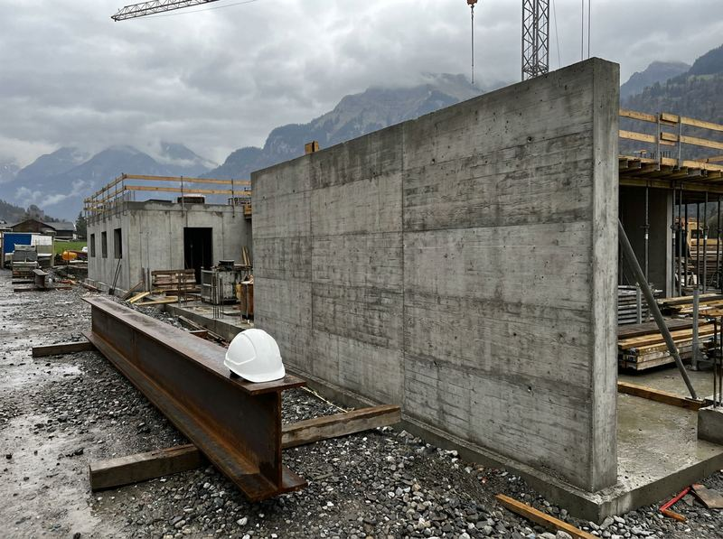

Freitag, 13. Juni 2026 · guten Morgen, Maria
12 aktive Projekte · 38 offene Aufgaben
87%
Auslastung
4.6
QS-Score
Aktive Projekte
—
+2 seit letztem Monat
Medien (gesamt)
—
+148 diese Woche
Pläne gesamt
—
17 im aktiven Projekt
Offene Pläne
17
3 seit 7+ Tagen überfällig
Ungelesene Kommentare
8
4 überfällig
Speicherverbrauch
68%
2.7 GB von 4 GB
Letzte Aktivität
Alle anzeigen →
T. Hofer hat 12 Fotos in Neubau Bahnhofstrasse 12 hochgeladen.
vor 14 Min.
Plan v3.2 – Grundriss EG wurde freigegeben.
vor 1 Std.
M. Brunner hat ein Video (02:14) kommentiert.
vor 2 Std.
6 neue Fotos in Schulhaus Erweiterung · Treppenhaus Nord.
heute 08:42
Planfreigabe für EFM Zürich-West steht aus · 4 Tage überfällig.
gestern 16:05
A. Peter hat 18 Fotos in Wohnsiedlung Horgen markiert.
gestern 11:20
Begehungs-Video (08:42) hochgeladen · Spital-Umbau Nordtrakt.
Mi 11.06.
Anstehende Aufgaben
5 weitere →
Heute
Planprüfung Grundriss 1.OG
Neubau Bahnhofstrasse 12
Morgen
Foto-Freigabe · 24 Fotos Treppenhaus
Schulhaus Erweiterung
Fr 14.06.
Baustellen-Begehung
EFM Zürich-West · 09:00–11:30
Mo 17.06.
Archivierung Projekt 2024
3 Projekte · 412 Medien
Medien pro Woche
12 Wochen →
Zuletzt bearbeitete Projekte
Alle Projekte →
Projekt-ID
Bauleiter
Medien

78%
Aktiv
In Prüfung
PRJ-2024-014
Medien-Streifen
38 Fotos
·
–
Timeline · Navigator
Heute: –
1 / 38
1 / 1
100%
Datei wählen
1 Datei
2 Metadaten
3 Bestätigen
Zuordnung
Bereit zum Hochladen
Die Datei wird dem aktuellen Projekt zugeordnet. Die Verarbeitung erfolgt im Hintergrund.
Abgeschlossene Projekte
8
Medien gespeichert
2'273Medien
Pläne (Planversionen)
41Pläne
Audit-Log-Einträge
186
2026
Abgeschlossen Q1 / Q2
3 Projekte · 681 Medien
Projekt
ID
Abschluss
Bauleiter · Team
Medien
Pläne
Aufbewahrung
Renovation Villa Seeblick
Archiviert
Seestrasse 5, 8708 Männedorf · EFH, 2 Etagen · Renovation
A. Peter
+2
98
Medien
2
Pläne
Sanierung Schulhaus Wettingen
Archiviert
Schulhausstrasse 14, 5430 Wettingen · Schulgebäude, 3 Etagen · Sanierung
T. Keller
+3
248
Medien
4
Pläne
EFM Lagerhalle Thalwil
Audit offen
Industriestrasse 6, 8800 Thalwil · Lagerhalle, 1 Etage · Neubau
S. Huber
+2
335
Medien
7
Pläne
2025
Abgeschlossen Q2 – Q4
5 Projekte · 1'592 Medien
Projekt
ID
Abschluss
Bauleiter · Team
Medien
Pläne
Aufbewahrung
Bürogebäude Baufeld
Archiviert
Zürcherstrasse 88, 4052 Basel · Bürogebäude, 5 Etagen · Neubau
M. Brunner
+5
421
Medien
6
Pläne
EFH Renovation Küsnacht
Archiviert
Seestrasse 142, 8700 Küsnacht · EFH, 3 Etagen · Renovation
A. Peter
+1
156
Medien
3
Pläne
Werkhof Aufstockung Bern
Archiviert
Werkstrasse 8, 3008 Bern · Werkhof, 2 Etagen · Aufstockung
S. Huber
+2
189
Medien
4
Pläne
Hochwasserschutz Aare Süd
Archiviert
Aarepromenade, 3014 Bern · Infrastruktur, 1.2 km · Tiefbau
T. Keller
+4
287
Medien
9
Pläne
Wohnsiedlung Horgen
Retention prüfen
Seestrasse 22, 8810 Horgen · Wohnsiedlung, 4 Etagen · Neubau
A. Peter
+3
312
Medien
5
Pläne
8 Projekte angezeigt · Filter: 2026+2025 · Sortierung: Abschlussdatum ↓
Audit-Log Archiv
21.06.2026
14:32
Wohnsiedlung Horgen für Retention-Prüfung markiert (88 % verbraucht)
AUD-2026-04481
02.02.2026
10:14
EFM Lagerhalle Thalwil abgeschlossen und ins Archiv überführt
AUD-2026-03102
28.02.2026
16:48
Sanierung Schulhaus Wettingen abgeschlossen und ins Archiv überführt
AUD-2026-03519
12.12.2025
11:02
Archiv-Export (Bundle, verschlüsselt) durchgeführt — 3 Projekte · 1.4 GB
AUD-2025-09812
04.07.2025
09:28
Wohnsiedlung Horgen abgeschlossen und ins Archiv überführt
AUD-2025-07228
10 Jahre Aufbewahrung
Schweizer DSG · SIA 118
Abgeschlossene Projekte werden 10 Jahre revisionssicher aufbewahrt. Pläne und Audit-Log
sind unveränderlich. Nach Ablauf erfolgt automatische Prüfung mit 90-Tage-Vorlauf.
Aufbewahrungsrichtlinie
Audit-Log-Pflicht
Vollständig · 10 Jahre
Jede Lese-, Export- und Wiederherstellungs-Aktion wird im Audit-Log protokolliert —
inklusive Benutzer, Zeitstempel und Signatur. Volltextsuche im Audit-Log ist
jederzeit verfügbar.
Audit-Log öffnen
Archiv-Export
PDF · ZIP · SIGN-PDF
Vollständiges Archiv als verschlüsseltes Bundle exportieren — inklusive aller
Pläne, Medien, Audit-Log und Übergabeprotokoll. Signatur nach SIA 118 kompatibel.
Archiv exportieren
Einstellung und Profil
Persönliche Angaben, Sicherheit, Benachrichtigungen, Anzeige und Datenschutz an einem Ort.
Aktives Profil
Maria Brunner
Bauleiterin · Projektleitung Hochbau
Online